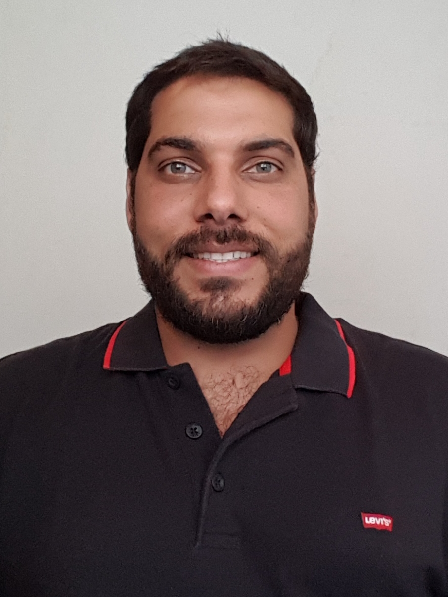

MENU
 Leandro Abud Fonseca
Rua Melancia, 07 - Apto 12 - Melancia - São Paulo, SP - 07121-982
Celular: (11) 99134-6449 (SMS/WhatsApp) - E-mail: leandroabud@gmail.com - Brasileiro - Solteiro - 38 anos
PCD - Pessoa com Deficiência: Surdo oralizado e sinalizado
Universidade Federal do Rio de Janeiro
05/2017 – Atualmente
Cargo: Professor do Curso de Libras para Servidores e para Alunos
Área: Faculdade de Letras
- Ministrar aulas do módulo I a III do curso de LIBRAS (Língua Brasileira de Sinais) para servidores ofertado pelo projeto CLAC (Cursos de Línguas Abertos à Comunidade).
Comitê Organizador dos Jogos Olímpicos e Paralímpicos Rio 2016™
05/2016 – 09/2016
Cargo: Gerente Adjunto de Projetos
Área: Maracanã / Instalações
- Fiscalizar a manutenção da arquibancada.
- Organizar todas as chaves de portas e estruturas provisórias.
- Atuar como instrutor de Jovens Aprendizes.
- Acompanhar a Polícia Federal na varredura do estádio Maracanã.
- Posicionar e fazer a manutenção dos prismas (look) do campo de futebol.
- Instalar a sinalização no Estádio Olímpico.
RODAPÉ